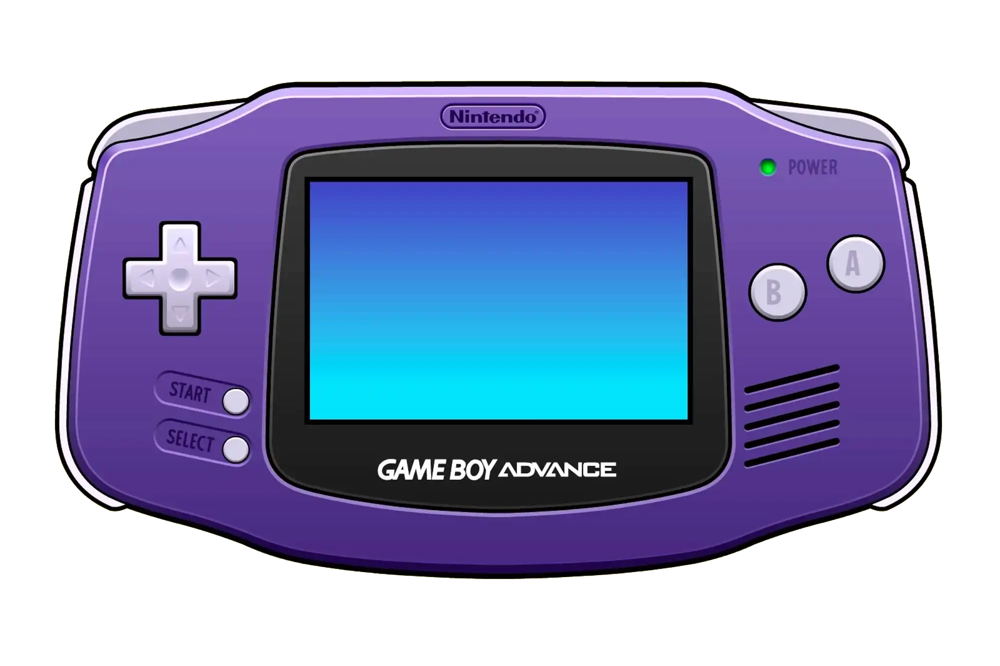

La consola que marco infancias
Lanzada por Nintendo en 2001, la Game Boy Advance (GBA) marcó un antes y un después en el mundo de los videojuegos portátiles. Con su potente hardware para la época, una amplia biblioteca de juegos y un diseño ergonómico, la GBA se convirtió en la consola favorita de millones, combinando nostalgia y diversión.